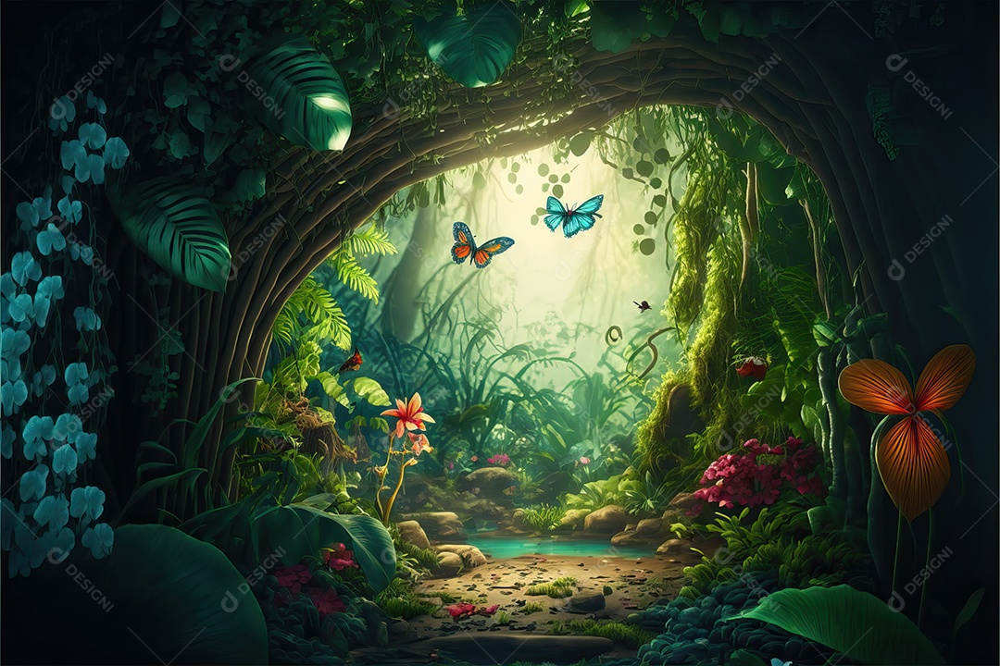
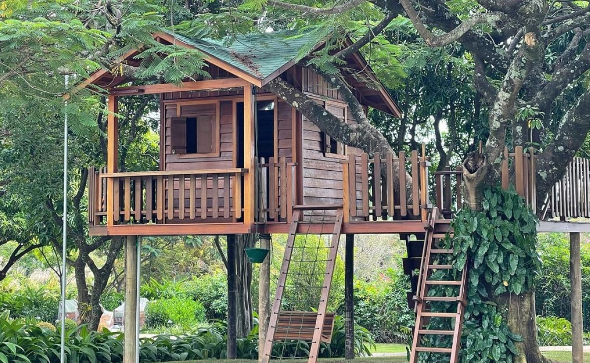
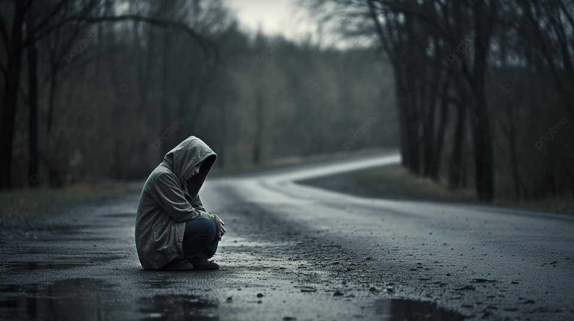

Era uma vez, no reino das fadas onde todos eram felizes. Em um belo dia, a rainha decidiu eleger o cavaleiro mais corajoso: se ele conseguisse enfrentar os caminhos mais perigosos e encontrar o tesouro perdido dela.

Você começa sua jornada na Floresta das sombras, acaba encontrando uma casa na árvore.
Você começa sua jornada no Rio sangrento e acaba caindo no rio, com isso descobre uma vila aquática.
Parabéns você completou sua missão e achou o tesouro da rainha!

Você voltou para casa, perdeu sua chance de vitória.
Parabéns você completou sua missão e achou o tesouro da rainha!
Você voltou para casa, perdeu sua chance de vitória.